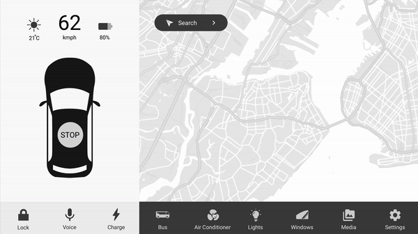

What It Is
Women at risk of domestic violence don’t leave dangerous situations due to fear of police repercussion, lack of resources, and simply that there may not be a safe place to go. The secure housing bus is an anonymous motor home that
can be called via app to provide temporary crisis accomodation, resource education and transport to necessary services for victims.
The idea was developed as a reaction to the consistant commentary that there is a
mistrustful rellationship between the police force and victims of domestic violence. A.S.H aims to fill this void and prevent victims from entering back into the cycle of violence. The bus is a safe haven, availbale for the firts
72 hours after a person feels as though they are unafe in their home. The bus can house victims along with their children for upto 3 days and helps to teach them how to keep their location confidential, whilst also educating them
about the other resources/services available and how to keep themselves safe at home.
How We Got Here
To begin this project our group sought to explore the different ways people could potentially interact with future technologies like autonomous vehicles as we rocignise their capacity to change the near future. After stumbling through
a variety of misguided initial concepts our team's shared intrigue lead us into the domain of domestic violence. We spoke with police officers, social workers, and case managers at specialised services to gain an insider understanding
and establish a research base to begin from.
Our trio learned from the outset that this problem was incredibly multi-faceted, there was no ‘one size fits all’ solutions. Our research covered distinct intersections of the
issue with differing needs of an interface. To overcome complexity - we generated multiple concepts targeting these intersections, testing and evaluating several wireframes with a variety of participants to develope our final interactive
prototype.
Referencing our primary and secondary research we began to map the stakeholders in our problem space and make sense of where their interests overlapped. We also delved into where technologies were used successfully
and where they lacked proper implementation. This catalysed our brainstorming of ideas for a solution but our team quickly became frustrated and lost our direction as we struggled to generate solid concepts. The complexity lead
us to solutions that were either too narrow or broad, after walking through them with our personas we were unsatisfied with their originality.
To combat this stagnation our team decided to start generating as many concepts
as possible, no matter how far-fetched so we developed over 60 concpets utilising forced association methods combined with XYZ statements to add substace and context to the results. Through a process of elimination we arrived at
3 concrete concepts, further developed through the Brainwriting 6-3-5 technique.
Iterations
For this project our team wnet through three major rounds rounds of iteration befor developing the final interactive prtotype. Inititially we created workflows and basic sketches of the screens for the three concepts that we had storyboarded.
Theses basic sketches were tested as paper-prtototypes with participants that closest fit the personas we had created. Analysis of this first round highlighted to the design team that we should pursue the austonomous housing bus
idea, as it had the hightest success rate of participants completing tasks during the Think-Aloud testing.
The second round of wireframes were also paper prototypes, however we ustilised the Marvel App to increase the fidelity of the experience for th participants as we had found their mental models were struggling to align with the
paper prototypes. This next round of iterations unveiled a few flaws in the design of the in-car screen and highlight some potential future opportunities for the mobile app. From this we bagan to take inspiration from Tesla's
new UI designs. We took these notes and applied them to our final wireframe iterations, created on Sketch and Adobe XD.

Our final round of wireframes encompassed all the core screens needed to complete the tasks we had created to fulfull the personas goals. The in-car UI was based on a single screen design that employed overlaying pop-ups to provide
transparency for the user and combines with constant feedback to make the user feel at ease when using this new technology. The mobile application included a fixed footer that translates into a 'Hidden Mode' to disguise the
applications purpose, whilst also employing common language used in other ride share apps to reduce user fatigue.
Testing
Our final round of wireframes encompassed all the core screens needed to complete the tasks we had created to fulfull the personas goals. The in-car UI was based on a single screen design that employed overlaying pop-ups to provide
transparency for the user and combines with constant feedback to make the user feel at ease when using this new technology. The mobile application included a fixed footer that translates into a 'Hidden Mode' to disguise the
applications purpose, whilst also employing common language used in other ride share apps to reduce user fatigue.


Mock-ups
Our final round of wireframes encompassed all the core screens needed to complete the tasks we had created to fulfull the personas goals. The in-car UI was based on a single screen design that employed overlaying pop-ups to provide
transparency for the user and combines with constant feedback to make the user feel at ease when using this new technology. The mobile application included a fixed footer that translates into a 'Hidden Mode' to disguise the
applications purpose, whilst also employing common language used in other ride share apps to reduce user fatigue.
Final Product

.gif)